七年级数学上学期期末模拟卷·拔尖卷
【北师大版2024】
参考答案与试题解析
一、选择题（本大题共10小题，每小题3分，满分30分）
1．（25-26七年级上·安徽宣城·期中）计算(−2)2026+(−2)2025的结果为（ ）
A．−22026 B．−22025 C．22025 D．22026
【答案】C
【分析】本题考查的是乘方的含义，乘法分配律的应用，通过提取−22025 简化表达式，利用负数的奇数次幂为负的性质进一步求解即可．
【详解】解：∵ −22026+−22025=−22025×−2+1=−22025×−1，
又∵ −22025=−22025（指数2025为奇数），
∴ 原式=−22025×−1=22025．
故选：C
2．下午14点20分，时钟的时针与分针夹角的度数是（ ）
A．40° B．50° C．60° D．70°
【答案】B
【分析】根据在下午14点20分，计算出分针与时针分别的旋转角度，再计算两针开始转时相差2×30°，则即可计算这时时针与分针所成的角．
【详解】解：下午14点20分，分针从数字12开始转了20×6°=120°，时针从数字2开始转了20×0.5°=10°，而两针开始转时相差2×30°
∴这时时针与分针所成的角的度数为120°-2×30°-10°=50°．
故选：B．
【点睛】本题考查了钟面角：钟面被分成12大格，每大格为30°；分针每分钟转6°，时针每分钟转0.5°．
3．（25-26七年级上·安徽六安·期中）已知a，b为系数，且ax2+2xy−x与3x2−2bxy+3y的差中不含二次项，a2−4b的值（ ）
A．13 B．8 C．5 D．9
【答案】A
【分析】本题考查整式的加减．
根据题意列出式子，去括号后合并同类项，根据不含二次项列出方程即可解决问题．
【详解】解：ax2+2xy−x−3x2−2bxy+3y
=ax2+2xy−x−3x2+2bxy−3y
=a−3x2+2+2bxy−x−3y，
∵ax2+2xy−x与3x2−2bxy+3y的差中不含二次项，
∴a−3=0，2+2b=0，
∴a=3，b=−1，
∴a2−4b=9+4=13．
故选：A．
4．已知∠A=20°50′，∠B=20.5°，∠C=19°58′ 那么( )
A．∠A>∠B>∠C B．∠A=∠B>∠C
C．∠C>∠A=∠B D．∠B>∠A>∠C
【答案】A
【分析】根据度分秒之间的换算，先把∠B的度数化成度、分、秒的形式，再根据角的大小比较的法则进行比较，即可得出答案．
【详解】∵∠B=20.5°=20°30′，
∴∠A>∠B>∠C，
故选A．
【点睛】此题考查了角的大小比较，先把∠B的度数化成度、分、秒的形式，再进行比较是本题的关键．
5．将1，2，3，4，…，60这60个自然数，任意分成30组，每组两个数，将每组的两个数中的任意一个数记做a，另一个数记做b，代入代数式a−b+a+b中进行计算，求出结果，30组分别代入后可求出30个结果，则这30个值的和的最大值是（ ）
A．2730 B．1565 C．1735 D．1830
【答案】A
【分析】本题考查了去绝对值，整式的加减，代数式求值，数字类规律题，根据题意化简代数式是解题的关键．
设各组中的数的a比b大，然后去掉绝对值号化简为2a，所以当30组中的较大的数a恰好是31到60时．这30个值的和的2倍最大，再根据求和公式列式计算即可得解．
【详解】解：设这两个数的较大数为a，较小数为b，即a>b，
则 a−b+a+b=a−b+a+b=2a，
∴30组的和等于30个较大数的和的2倍，
则这30个值的和的最大值=2×31+32+⋯+60=2×31+60×302=2730．
故选A．
6．“共享单车”为人们提供了一种经济便捷、绿色低碳的共享服务，成为城市交通出行的新方式．小张对他所在小区居民当月使用“共享单车”的次数进行了抽样调查，并绘制成了如图所示的频数分布直方图（每一组含前一个边界值，不含后一个边界值），则下列说法错误的是（）
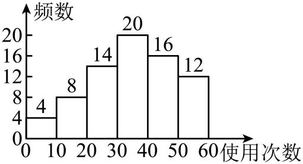
A．小张一共抽样调查了74人
B．样本中当月使用“共享单车”30次～40次的人数最多
C．样本中当月使用“共享单车”不足20次的有12人
D．样本中当月使用“共享单车”的不足30次的人数多于40次～60次的人数
【答案】D
【分析】本题考查频数分布直方图，解题的关键是读懂图象信息，灵活运用所学知识解决问题；
利用频数分布直方图中的信息一一判断即可；
【详解】A、小张一共抽样调查了4+8+14+20+16+12=74人，故A选项不符合题意，
B、样本中当月使用“共享单车”30~40次的人数最多，有20人，故B选项不符合题意，
C、样本中当月使用“共享单车”不足20次的人数有12人，故C选项不符合题意，
D、样本中当月使用“共享单车”40~60次的人数为28人，当月使用“共享单车”不足30次的人数有26人，所以样本中当月使用次数不足30次的人数少于40~60次的人数，故D选项符合题意，
故选：D．
7．（25-26七年级上·江苏宿迁·期中）已知关于x的一元一次方程x2025+5=2025x+m的解是x=19，那么关于y的一元一次方程5−y2025+5=20255−y+m的解是（ ）
A．21 B．−14 C．23 D．24
【答案】B
【分析】本题主要考查一元一次方程的解及其解法，熟练掌握一元一次方程的解及其解法是解题的关键；通过变量替换，将关于y的方程转化为与原方程相同的形式，利用已知解求解即可．
【详解】解：设z=5−y，则关于y的方程化为z2025+5=2025z+m，
∵关于x的一元一次方程x2025+5=2025x+m的解是x=19，
∴关于z的一元一次方程z2025+5=2025z+m，的解是z=19，
∴5−y=19，
∴y=5−19=−14；
故选B．
8．（24-25七年级上·湖南长沙·月考）如图，将一根绳子对折以后用线段AB表示，现从点P处将绳子剪断，剪断后的各段绳子中最长的一段为8cm，若AP:PB=1:4，则这根绳子原来的长度为（ ）

A．10cm B．20cm C．10cm或20cm D．10cm或24cm
【答案】C
【分析】本题考查求线段长．根据题意，分两种情况：（1）当对折点在A点时，从P处将绳子剪断，分成三段：2AP,PB,PB；（2）当对折点在B点时，从P处将绳子剪断，分成三段：AP,AP,2PB；再根据剪断后的各段绳子中最长的一段为8cm ，列式求解即可得到答案．
【详解】解：根据题意，分两种情况：
（1）当对折点在A点时，从P处将绳子剪断，分成三段：2AP,PB,PB，
∵AP:PB=1:4，即AP=14PB，
∴2AP=12PB，即线段PB是最长的一段，
∵最长的一段为8cm ，
∴2AP=12PB=4，解得AP=2cm，
∴这条绳子的原长为2(AP+PB)=20cm；
（2）当对折点在B点时，从P处将绳子剪断，分成三段：AP,AP,2PB，
∵AP=14PB，
∴线段2PB是最长的一段，
∵最长的一段为8cm，
∴2PB=8，解得PB=4cm，
∴AP=14PB=14×4=1cm，
∴这条绳子的原长为2(AP+PB)=10cm；
故选：C．
9．（25-26七年级上·新疆克拉玛依·期中）有一数值转换器的原理如图所示，若开始输x的值5，可发现第一次输出的结果8，第二次输出的结果4，第三次输出的结果2，第四次输出的结果1……则第8次输出的结果是（ ）

A．1 B．2 C．4 D．8
【答案】C
【分析】本题考查数字类规律探究、代数式求值，理解数值转换器的原理，找到变化规律是解答的关键．
根据数值转换器的原理求出前几个输出的结果，发现从第二次输出结果开始，4、2、1每3个数循环重复出现的规律，进而求解即可．
【详解】解：由题意，若开始输入x的值是5，则：
第一次输出的结果是5+3=8，
第二次输出的结果是12×8=4，
第三次输出的结果是12×4=2，
第四次输出的结果是12×2=1，
第五次输出的结果是1+3=4，
……，
发现，从第二次输出结果开始，4、2、1每3个数循环重复出现，
又8−1÷3=2⋯⋯1，
∴第次输出的结果与第二次输出结果相同，是4．
故选：C．
10．如图，已知A，B（B在A的左侧）是数轴上的两点，点A对应的数为12，且AB=18，动点P从点A出发，以每秒2个单位长度的速度沿数轴向左运动，在点P的运动过程中，M，N始终为AP，PB的中点，设运动时间为t（t>0）秒，则下列结论中正确结论的个数是（ ）
①B对应的数是−6；
②点P到达点B时，t=9；
③BP=2时，t=8；
④在点P的运动过程中，线段MN的长度会发生变化．
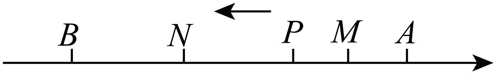
A．①② B．①②③ C．①③④ D．①②③④
【答案】A
【分析】本题考查了数轴的应用，线段的中点性质，根据题目的已知条件并结合图形分析是解题的关键．
根据两点间距离进行计算即可判断①；利用路程除以速度即可判断②；分两种情况，点P在点B的右边，点P在点B的左边，由题意求出AP的长，
再利用路程除以速度即可判断③；分两种情况，点P在点B的右边，点P在点B的左边，利用线段的中点性质进行计算即可判断④；
【详解】∵A，B（B在A的左侧）是数轴上的两点，点A对应的数为12，且AB=18，
∴B对应的数为12−18=−6，故①正确；
∵18÷2=9，
∴点P到达点B时，t=9，故②是正确的；
当点P在点B右边时，
∵BP=2，
∴AP=16，
∴t=16÷2=8；
当点P在点B左边时，
∵BP=2，
∴AP=20，
∴t=20÷2=10，
∴BP=2时，t=8或t=10，故③错误；
在点P的运动过程中，当点P在点B右边时，
MN=PM+PN=12AP+12PB=12AP+PB=12AB=9；
在点P的运动过程中，当点P在点B左边时，
MN=PM−PN=12AP−12PB=12AP−PB=12AB=9；
∴在点P的运动过程中，线段MN的长度不会发生变化，故④错误；
∴正确结论有①②，
故选：A．
二、填空题（本大题共6小题，每小题3分，满分18分）
11．（25-26七年级上·四川成都·期中）已知a，b，c三个有理数在数轴上的对应位置如图所示，化简：a+b−c−a+b−a的结果为 ．
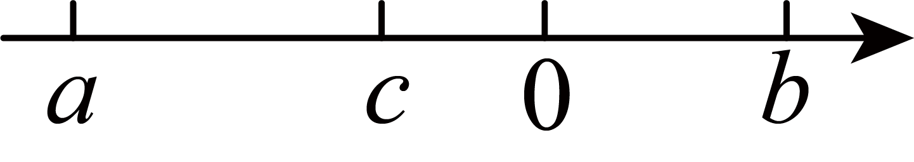
【答案】−a−c
【分析】先由a，b，c三个有理数在数轴上的对应位置得到a<c<0<b，且c<b<a，进而确定a+b<0,c−a>0,b−a>0，再由绝对值代数意义去绝对值，然后去括号、合并同类项化简即可得到答案．
【详解】解：如图所示：
∴a<c<0<b，且c<b<a，
则a+b<0,c−a>0,b−a>0，
∴ a+b−c−a+b−a
=−a+b−c−a+b−a
=−a−b−c+a+b−a
=−a+a−a+b−b−c
=−a−c，
故答案为：−a−c．
【点睛】本题考查绝对值化简，涉及去括号、合并同类项运算、由数轴上点的位置比较大小及确定式子符号、绝对值代数式意义等知识，熟记绝对值代数式意义及整式加减运算是解决问题的关键．
12．（24-25九年级上·江苏无锡·月考）如果a、b是定值，且关于x的方程2kx+a3=2+x+bk6，无论k为何值时，它的解总是x=1，那么2a+b的值是 ．
【答案】17
【分析】本题考查了方程解的定义，一元一次方程有无数个解的条件，代数式的值，根据解的定义，灵活运用转化的思想，把问题转化为一元一次方程有无数个解的问题是解题的关键，根据方程解的定义，把方程转化为关于k的一元一次方程，根据方程有无数解的条件求解即可．
【详解】解：把x=1代入方程2kx+a3=2+x+bk6，
∴2k+a3=2+1+bk6，
∴4k+2a=12+1+bk，
∴4k−bk=13−2a，
∴k4−b=13−2a，
由题意得：4−b=0,13−2a=0，
解得：b=4,a=132，
∴2a+b=2×132+4=17，
故答案为：17．
13．已知B、C两点把线段AD分成2:3:4三部分（B在C点左侧），M是线段AD的中点，N为CD中点，CM=2cm．则求MN= cm．
【答案】10
【分析】本题考查了求线段的长度，解决本题的关键是根据比例求出相关线段长．设AB=2xcm，BC=3xcm，CD=4xcm，AD=2x+3x+4x=9xcm，根据CM=2cm，得到x=4，求得DN=2x=8cm，DM=4.5x=18cm，根据线段中点的定义即可得到结论．
【详解】解：如下图：
∵B、C两点把线段AD分成2:3:4三部分，
∴设AB=2xcm，BC=3xcm，CD=4xcm，AD=2x+3x+4x=9xcm，
∵M是线段AD的中点，N为CD中点，
∴DM=12AD=12×9x=4.5xcm，DN=12CD=2xcm，
∵CM=2cm，
∴DM−DC=4.5x−4x=2，
∴x=4，
∴DN=2x=8cm，DM=4.5x=18cm，
∴MN=DM−DN=18−8=10cm，
故答案为：10．
14．如图，∠AOC=∠BOD=90°，OB在∠AOC的内部，OC在∠BOD的内部，OE是∠AOB的一三等分线，若∠BOC=30°，则∠EOD的度数为 ．

【答案】110°或130°
【分析】先根据余角的定义可得∠AOB=60°，再根据OE是∠AOB的一三等分线可得∠BOE=20°或∠BOE=40°，据此分两种情况解答即可．
【详解】解：∵∠AOC=90°，∠BOC=30°，
∴∠AOB=∠AOC−∠COB=60°，
∵OE是∠AOB的一三等分线，
∴∠BOE=13∠AOB=20°或∠BOE=23∠AOB=40°，
∵∠EOD=∠BOE+∠BOD，∠BOD=90°，
∴当∠BOE=20°时，∠EOD=20°+90°=110°；
当∠BOE=40°时，∠EOD=40°+90°=130°；
综上，∠EOD的度数为110或130．
故答案为110°或130°．
【点睛】本题主要考查了垂直的定义、余角的性质、等分线等知识点，掌握分类讨论思想是解答本题的关键．
15．（25-26七年级上·江苏连云港·期中）将8张长为a，宽为ba>b的小长方形纸片，按图1和图2所示的两种方式放在长方形ABCD内（相邻的小长方形既无重叠，又不留空隙）．图1中两块阴影部分的周长和为C1，图2中阴影部分的周长为C2．若长方形ABCD的长比宽大a−b，则C1−C2的值为 ．

【答案】a+b
【分析】本题考查了代数式、整式的加减．解题的关键是理解题意，根据图形将长和宽及C1、C2，表示出来，
根据图计算出长方形的宽为a+5b，再求得长方形的长；然后分别表示出C1、C2，再计算即可得出答案．
【详解】解：由图1长方形可知，宽为a+5b，
∵长方形ABCD的长比宽大a−b，
则长为a+5b+a−b=2a+4b，
由图可知：
C1=2a+4b+a+5b×2+2a+4b−3b−a=7a+19b，
C2=22a+4b+a+5b=6a+18b，
C1−C2=7a+19b−6a+18b=a+b，
故答案为：a+b
16．（25-26七年级上·重庆·期中）对于任意两位数x和y，若x和y的个位数字和十位数字均为偶数，且0<x−y<10，那么我们称这两个数的和为“偶和数”，这两个数的差为“偶差数”，把“偶和数”与“偶差数”的和与4的商记为f(x,y)．例如：x=26,y=24 ，则“偶和数”为26+24=50，“偶差数”为26−24=2，所以f26,24=50+24=13．
（1）计算：f48,42= ；
（2）若f(x,y)能被7整除，则所有符合条件的x的值之和为 ．
【答案】 24 154
【分析】本题主要考查了有理数的混合运算，整式加减法，本题是阅读型题目，准确理解题干中的定义和公式并熟练运用是解题的关键．
（1）根据f(x,y)的定义解答即可．
（2）根据题意表示出f(x,y)，得出x能被14整除，且x是两位数，x的个位数字和十位数字均为偶数，即可解答．
【详解】解：（1）f48,42=48+42+48−424=24，
故答案为：24．
（2）根据题意可得f(x,y)=x+y+x−y4=x2，
则x2能被7整除，即x能被14整除，
则x=14或28或42或56或70或84或98，
∵对于任意两位数x，x的个位数字和十位数字均为偶数，
∴x=28或42或84，
28+42+84=154，
故答案为：154．
三、解答题（本大题共9小题，满分72分）
17．（6分）（24-25七年级上·河南驻马店·期末）已知A=3a2b−2ab2+abc，晓风错将“2A−B”看成“2A+B”，算得结果C=4a2b−3ab2+4abc．
(1)计算B的表达式；
(2)求正确的结果的表达式；
(3)晓华说（2）中的结果的大小与c的取值无关，对吗？若a=18，b=15，求（2）中代数式的值．
【答案】(1)−2a2b+ab2+2abc
(2)8a2b−5ab2
(3)结果的大小与c的取值无关，0
【分析】本题主要考查整式的加减，涉及的知识有：去括号、合并同类项，熟练掌握运算法则是解题的关键；
（1）由2A+B=C得B=C−2A，将C、A代入计算可得；
（2）将A、B代入2A−B计算即可；
（3）由化简后的代数式中无字母c可知其值与c无关，将a、b的值代入计算即可.
【详解】（1）解：∵2A+B=C
∴B=C−2A
=4a2b−3ab2+4abc−2(3a2b−2ab2+abc)
=4a2b−3ab2+4abc−6a2b+4ab2−2abc
=−2a2b+ab2+2abc.
故B的表达式为−2a2b+ab2+2abc.
（2）解：2A−B=2(3a2b−2ab2+abc)−(−2a2b+ab2+2abc)
=6a2b−4ab2+2abc+2a2b−ab2−2abc
=8a2b−5ab2.
故正确的结果的表达式为8a2b−5ab2.
（3）解：由（2）得2A−B=8a2b−5ab2
∵代数式中无字母c
∴其值与c无关是对的
将a=18，b=15代入得：
2A−B=8a2b−5ab2=8×(18)2×(15)−5×(18)×(15)2=140−140=0.
18．（6分）（25-26七年级上·江苏宿迁·期中）定义：如果两个一元一次方程的解之和为1，我们就称这两个方程为“和1方程”，例如：方程4x=8和x+1=0为“和1方程”．
(1)若关于x的方程3x+m=0与方程4x−2=x+10是“和1方程”，求m的值；
(2)若“和1方程”的两个解的差为1，其中一个解为n，求n的值；
【答案】(1)m=9
(2)n的值为0或1
【分析】本题主要考查一元一次方程的解及其解法，熟练掌握一元一次方程的解及其解法是解题的关键；
（1）由题意易得方程3x+m=0与方程4x−2=x+10的解分别为x=−m3，x=4，然后可得−m3+4=1，进而问题可求解；
（2）设另一个方程的解为m，由题意得：m−n=1，则有m−n=±1，进而分类进行求解即可．
【详解】（1）解：解方程3x+m=0得：x=−m3；
解方程4x−2=x+10得：x=4；
∴−m3+4=1，
解得：m=9；
（2）解：设另一个方程的解为m，由题意得：m−n=1，则有m−n=±1，
当m−n=1时，则m=n+1，根据“和1方程”的定义可得：n+1+n=1，解得n=0；
当m−n=−1时，则m=n−1，根据“和1方程”的定义可得：n−1+n=1，解得n=1；
综上所述：n的值为0或1．
19．（6分）（24-25七年级上·江西吉安·期末）已知A，B，C，D四点在同一直线上，点D在线段AB上．

(1)如图，若线段AB=16，点C是线段AB的中点，BD=3CD，求线段CD的长度；
(2)若线段AB=15a，点C是线段AB上一点，且满足2AC=BC，AD:BD=3:2，求线段CD的长度．（用含a的式子表示）
【答案】(1)2
(2)4a
【分析】（1）由点C是线段AB的中点可得AC=BC=12AB=8，然后根据线段之间的和差关系即可得出答案；
（2）由AB=15a，AD:BD=3:2，AD+BD=AB可得AD=35AB=9a，BD=25AB=6a，由AB=15a，2AC=BC，AC+BC=AB可得AC=13AB=5a，BC=23AB=10a，然后根据CD=AD−AC即可得出答案．
【详解】（1）解：∵线段AB=16，点C是线段AB的中点，
∴AC=BC=12AB=8，
∵BD=3CD，BD+CD=BC，
∴CD=14BC=14×8=2；
（2）解：∵点D在线段AB上，AB=15a，AD:BD=3:2，AD+BD=AB，
∴AD=35AB=35×15a=9a，BD=25AB=25×15a=6a，
∵AB=15a，2AC=BC，AC+BC=AB，
∴AC=13AB=13×15a=5a，BC=23AB=23×15a=10a，
∴CD=AD−AC=9a−5a=4a．
【点睛】本题主要考查了线段中点的有关计算，线段的和与差，线段之间的数量关系，列代数式等知识点，熟练掌握线段中点的有关计算及线段的和与差是解题的关键．
20．（8分）（25-26七年级上·四川德阳·期中）将连续的奇数1,3,5,7,9…排成如图1所示的数阵：
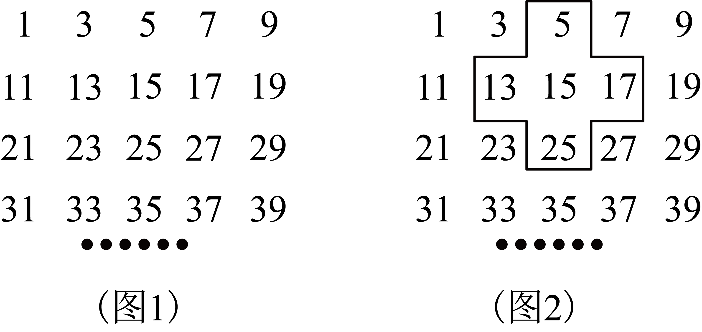
(1)如图2，用十字形框按如图所示的方式任意框五个数．若框住的5个数中，正中间的一个数为15，求这5个数的和．设正中间的数为a，请用式子表示十字形框内五个数的和，通过你的计算，你发现这5个数的和与正中间的数有什么关系？
(2)十字形框中的五个数之和能等于105吗？能等于2025吗？请说明理由．
(3)请仿照图2，设计两个你喜欢的图形，使框住的几个数的和为135，在下面两个图中框出来．
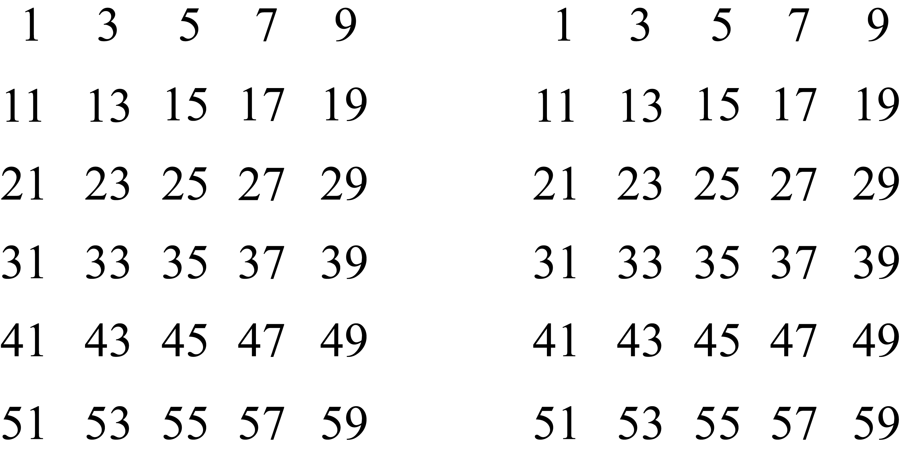
【答案】(1)75；5a；十字框中的五个数的和是中间数的5倍
(2)和不能等于105；能等于2025，理由见解析
(3)见解析
【分析】本题考查了一元一次方程的应用以及规律型中数字的变化，根据十字框中5个数的特点找出十字框中的五个数的和是中间数的5倍是解题的关键．
（1）将十字框中的五个数相加即可得出结论；
（2）设中间的数为x，其它4个数分别为x−10、x−2、x+2、x+10，令其相加等于135；和2025算出x的值，结合数阵数的特点即可得出结论；
（3）根据数阵的特征得到中间的数，即可求解．
【详解】（1）解：这5个数的和为5+13+15+17+25=75；
∵中间数为a，
∴其余四个数分别为：a−10、a−2、a+2、a+10，
则十字框中五个数之和为a−10+a−2+a+a+2+a+10=5a；
∴十字框中的五个数的和是中间数的5倍；
（2）解：和不能等于105；能等于2025，理由如下：
设中间的数为x，其它4个数分别为x−10、x−2、x+2、x+10，
5个数之和为x−10+x−2+x+x+2+x+10=5x
若和能等于105，则5x=105，
解得：x=21，
∵21在第一列，
∴十字形框无法框中间为21的五个数，
即和不能等于105；
若能等于2025，则5x=2025，
解得：x=405，405为奇数，且405在中间一列，可以圈出十字框；
（3）解：如图，即为所求．
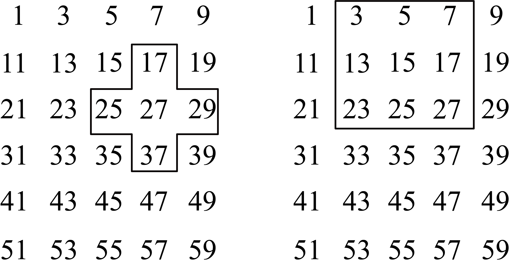
21．（8分）华罗庚先生说；“数缺形时少直观，形少数时难入微，数形结合百般好，隔离分家万事休”．
【知识储备】
点M、N在数轴上分别表示有理数m、n，则M、N两点之间的距离可表示为|m−n|．
【初步运用】
（1）数轴上表示3与−4的两点之间的距离为______；
（2）已知数轴上某个点表示的数为x．
①若|x−1|=2，则x=______；
②若|x+3|=|x−5|，则x=______；
【深入探究】
（3）如图，数轴上每相邻两点之间的距离为1个单位长度，点A、B、C表示的数分别为a、b、c．

①|a−b|+|b−c|=______；
②若|b−2a|=4，则点C表示的数为______；
③若该数轴上另有两个点P、Q，它们分别表示有理数p、q，其中点Q在线段AC上，当|p−a|+|p−c|=8且|q−a|+|q−b|+|q−c|最小时，P、Q两点之间的距离为______．
【答案】（1）7；（2）①3或−1；②1；（3）①6；②4或12；③3或5
【分析】本题考查了数轴上两点之间的距离，绝对值．解题的关键在于对知识的熟练掌握与正确运算．
（1）根据两点之间的距离公式列式计算即可求解；
（2）①②根据两点之间的距离公式列出方程即可求解；
（3）①由数轴知，c>b>a，去绝对值符号即可求解；
②由数轴知，b−a=2，结合|b−2a|=4，求得a=−2或a=6，据此求解即可；
③分情况讨论，求得q=b，p=a−1或p=a+7，据此求解即可．
【详解】解：（1）数轴上表示3与−4的两点之间的距离为3−−4=7，
故答案为：7；
（2）①若|x−1|=2，则x−1=2或x−1=−2，
解得x=3或x=−1，
故答案为：3或−1；
②若|x+3|=|x−5|，则x+3=x−5（舍去）或x+3=5−x，
解得x=1，
故答案为：1；
（3）①由数轴知，c>b>a，∴a−b<0，b−c<0，∴|a−b|+|b−c|=b−a+c−b=c−a=6；
故答案为：6；
②由数轴知，b−a=2，即b=2+a，结合|b−2a|=4，即|2+a−2a|=4，∴|2−a|=4，∴2−a=4或2−a=−4，解得a=−2或a=6；根据数轴知，c−a=6，∴点C表示的数为4或12；故答案为：4或12；
③由题意可知，点Q在线段AC上，可得a≤q≤c，则q−a≥0，q−c≤0，∴q−a=q−a，q−c=c−q，当a≤q≤b时，q−b≤0，∴q−b=b−q，
故|q−a|+|q−b|+|q−c|=q−a+b−q+c−q=c−a+b−q=6+b−q，
当b<q≤c时，q−b>0，则q−b>q−b，故|q−a|+|q−b|+|q−c|=q−a+q−b+c−q=c−a−b=q=6+q−b，
∵|q−a|+|q−b|+|q−c|最小，故q=b时，取值最小；
当p≤a时，p−a≤0，p−c<0，∴p−a+p−c=a−p+c−p=a+c−2p=2a+6−2p=8，即a−p=1；
当a<p<c时，p−a>0，p−c<0，∴p−a+p−c=p−a+c−p=c−a=8（不成立，舍去）；
当p≥c时，p−a>0，p−c≥0，∴p−a+p−c=p−a+p−c=2p−a−c=2p−2a−6=8，即p−a=7，
综上，q=b，p=a−1或p=a+7，
当p=a−1时，P、Q两点之间的距离为b−a−1=b−a+1=2+1=3；
当p=a+7时，P、Q两点之间的距离为b−a+7=b−a−7=2−7=5；
∴P、Q两点之间的距离为3或5．
故答案为：3或5．
22．（9分）（25-26七年级上·广西南宁·阶段练习）综合实践
怎样邮寄沃柑更经济?南宁武鸣沃柑是全国名特优新农产品，皮薄易剥，汁多味甜．小南家的沃柑每年通过网络进行包邮销售，因此需要较多快递费的支出． | |||||||||||
素材1 | 一客户在小南家定了10箱沃柑，每箱以10千克为标准，超过的千克数记为正数不足的千克数记为负数，记录如表所示：
| ||||||||||
素材2 | 据调查，某快递公司收费标准如下：首重1千克以内8元（含1千克），续重（超过1千克的部分）2元/千克，不足1千克按1千克计，超过20千克的需要额外支付包装费30元． | ||||||||||
素材3 | 据小南家常年的邮寄经验，包裹越大，沃柑受损率越高．一个包裹在20千克以内，沃柑几乎无受损（受损忽略不计）；一个包裹质量在80千克至120千克之间，沃柑的受损率估计为5%，破损部分由小南家按售价进行赔偿，返还给顾客相应现金． | ||||||||||
任务1 | 计算这10箱沃柑的总质量． | ||||||||||
任务2 | 方案一：分10箱邮寄，每箱一个包裹； 方案二：10箱打成一个大包裹邮寄， 请通过计算说明，选哪种方案邮寄，小南家支付的邮费更省?省多少钱? | ||||||||||
任务3 | 今年沃柑的成本价为3元/千克，售价为8元/千克．结合任务2，邮寄10箱沃柑哪种方案利润更高? | ||||||||||
【答案】任务1：100千克；任务2：选方案二邮寄，小南家支付的邮费更省，省34元；任务3：方案一利润更高，理由见解析
【分析】此题考查了有理数的混合运算的应用，解题的关键是正确分析题意并列出算式．
任务1：根据表格中的数据列出算式求解即可；
任务2：根据方案一和方案二的计算方法分别求解判断即可；
任务3：根据题意分别求出方案一和方案二利润，进而判断求解即可．
【详解】解：任务1：10×10+0.3×1+0.1×4−0.1×3−0.2×2=100（千克），
∴这10箱沃柑的总质量为100千克；
任务2：由表格可得，
10+0.3=10.3，10+0.1=10.1，10−0.1=9.9，10−0.2=9.8，
∴10箱沃柑中重量为10.3的有1箱，重量为10.1的有4箱，重量为9.9的有3箱，重量为9.8的有2箱，
方案一：8×10+10+1−1×2+10+1−1×2×4+10−1×2×3+10−1×2×2=270（元）；
方案二：
∵这10箱沃柑的总质量为100千克，
∴8+100−1×2+30=236（元），
∵270>236，270−236=34（元），
∴选方案二邮寄，小南家支付的邮费更省，省34元；
任务3：
方案一：邮寄10箱沃柑的利润为8−3×100−270=230（元），
方案二：邮寄10箱沃柑的利润为8−3×100−236−100×5%×8=224（元），
∵230>224
∴方案一利润更高．
23．（9分）（25-26七年级上·重庆·期中）一个点从数轴的原点开始，先向左移动3个单位到达A点，再向右移动7个单位到达C点；接着将数轴折叠，使点A和点C重合，折点记为B；最后将数轴展开．
(1)直接写出A，B，C三点所表示的数；
(2)动点P从点C出发，以每秒0.4个单位长度向左运动；动点Q，M分别以每秒0.5个单位长度和0.3个单位长度的速度从A，B两点同时出发，向右运动．记Q与M两点之间的距离为QM，M与P两点之间的距离为MP．
①求何时M与Q相距1个单位长度；
②在P，Q，M三个点运动的过程中，是否存在有理数m，使QM+mMP的值始终保持不变，若存在，请求出m的值；若不存在，请说明理由．
【答案】(1)A点表示的数为−3；B点表示的数为0.5，C点表示的数为4
(2)①12.5秒或22.5秒；②不存在，理由见解析
【分析】本题考查了数轴上两点间的距离，数轴上的点表示数，数轴上的翻折等知识点，解决此题的关键是读懂题意用式子表示出每个点．
（1）根据数轴上的点的移动左减右加的规律得到A、C两点表示的数，再根据数轴折叠的性质可知点B表示的数即为A、C两点的中点，即可解答；
（2）①设运动时间为t秒，则Q点表示的数为−3+0.5t，M点表示的数为0.5+0.3t，再根据数轴上两点间的距离的公式，列出方程解答即可；
②同①分别表示出QM和MP，再根据题意列出整式，然后根据项无关得到结果进行对比即可得到答案．
【详解】（1）解：∵点从数轴原点开始，向左移动3个单位到达A点，
∴A点表示的数为0−3=−3，
∵再向右移7个单位到达C点，
∴C点表示的数为−3+7=4，
∴A、C两点间距离为7，
∵将数轴折叠，使点A和点C重合，折点记为B，
∴B点表示的数为−3+42=0.5；
（2）解：①设运动时间为t秒，则Q点表示的数为−3+0.5t，M点表示的数为0.5+0.3t，
∴QM=0.5+0.3t−−3+0.5t=3.5−0.2t，
∵M与Q相距1个单位长度，
∴3.5−0.2t=1，即3.5−0.2t=1或3.5−0.2t=−1，
解得t=12.5或22.5，
∴当运动时间为12.5秒或22.5秒时，M与Q相距1个单位长度；
②设运动时间为t秒，则Q点表示的数为−3+0.5t，M点表示的数为0.5+0.3t，P点表示的数为4−0.4t，
∴QM=0.5+0.3t−−3+0.5t=3.5−0.2t，MP=4−0.4t−0.5+0.3t=3.5−0.7t，
∴当t≥17.5时，
QM+mMP=0.2t−3.5+m0.7t−3.5=0.7m+0.2t−3.5−3.5m，
当0.7m+0.2=0，即m=−27时，QM+mMP的值始终保持不变，
此时QM+mMP=−3.5−3.5×−27=−2.5；
当5≤t<17.5时，
QM+mMP=3.5−0.2t+m0.7t−3.5=0.7m−0.2t+3.5−3.5m，
当0.7m−0.2=0，即m=27时，QM+mMP的值始终保持不变，
此时QM+mMP=3.5−3.5×27=2.5；
当t<5时，
QM+mMP=3.5−0.2t+m3.5−0.7t=−0.7m−0.2t+3.5+3.5m，
当−0.7m−0.2=0，即m=−27时，QM+mMP的值始终保持不变，
此时QM+mMP=3.5+3.5×−27=2.5；
∴不存在一个有理数m，使QM+mMP的值始终保持不变．
24．（10分）（24-25七年级上·重庆·期末）【问题情境】元旦节，班级需要进行文化布置，各个学习小组分工制作装饰品：
(1)小颖所在的综合实践小组准备制作一些无盖正方体纸盒收纳班级讲台上的小物件．图1中的哪些图形经过折叠能围成无盖正方体纸盒？______（填序号）．

(2)小志组准备制作一个有盖的大正方体盒子，他们先用5个大小一样的正方形制成如图2，3所示的拼接图形（阴影部分），经折叠后发现还少一个面，请你在图2，图3中的图形上再各拼接一个位置不同的正方形（用阴影表示），使新拼接成的图形经过折叠后能成为一个封闭的正方体盒子．

(3)小亮组制作了若干个小正方体盒子，搭成几何体的形状，它从正面和上面看到的图形如图4所示，则这样的几何体有______种？它最多需要______个小立方块？最少需要______个小立方块？请分别画出需要小立方块最少时，从左面看到的几何体的形状图．（画出所有可能的情况）

【答案】(1)①③④
(2)作图见解析：（答案不唯一）
(3)3，7，8，作图见解析
【分析】本题考查了正方体的表面展开图，从不同方向看立体图形，掌握正方体的表面展开图的模型以空间想象力是解题的关键．
（1）根据正方体的展开图，逐个分析即可求解；
（2）根据正方体的展开图每个面都有对面即可解答；
（3）根据从正面看和上面看得到的图形，分析第2列小正方体的个数解答，根据左视图的定义即可画出最少和最多的情况即可．
【详解】（1）解：图①有5个面，可以经过折叠能围成无盖正方体形纸盒，图②经折叠后有两个面重复，因此折叠不能围成无盖正方体形纸盒；图③④有5个面，均可以折叠为无盖的正方体纸盒，
∴经过折叠能围成无盖正方体纸盒的有：①③④；
故答案为：①③④．
（2）解：如图所示：（答案不唯一）
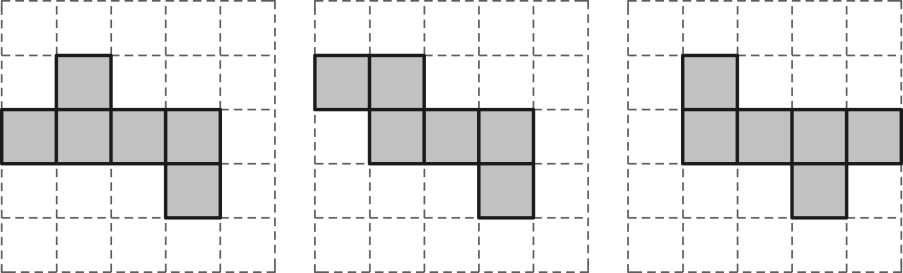
（3）解：第2列小立方块前面1个，后面2个；第2列小立方块前面2个，后面1个；第2列小立方块前面2个，后面2个；
故这样的几何体有3种；
它最多需要3+2+2+1=8个小立方块；最少需要3+2+1+1=7个小立方块；
如图所示∶
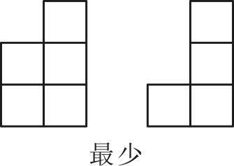
，故答案为：3，7，8．
25．（10分）（25-26七年级上·陕西咸阳·期中）【问题提出】
（1）如图1，OC、OD是∠AOB内的两条射线，OD平分∠AOC，∠BOC=13∠COD，∠BOD=60°．求∠AOB的度数；
【问题探究】
（2）如图2，已知OC、OD、OE是∠AOB（∠AOB>110°）内的三条射线，OC平分∠BOD，∠COE=12∠BOC=20°，且OE在OC的左侧，现要在∠AOB内画一条射线OF，使得∠DOF=38∠BOD，求∠EOF的度数；
【拓展提升】
（3）如图3，张老师在黑板上画出∠AOB，并在∠AOB内部画出∠COD（射线OC在OD的左侧）和射线OE、OF，其中OE平分∠AOC，OF平分∠BOD，若∠AOB=α，∠COD=β，∠EOF=γ，α>γ>β，请你猜想α、β和γ之间的数量关系，并说明理由．
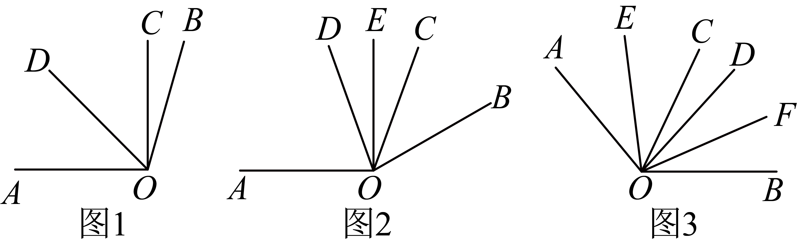
【答案】（1）105°（2）50°或10°（3）α+β=2γ，理由见解析
【分析】本题考查了角平分线的定义和角的关系，解题的关键是正确找出角度关系．
（1）根据角平分线的定义，结合已知角的关系，得出∠AOB的度数；
（2）先根据已知条件求出∠BOD、∠DOC的度数，再分情况讨论射线OF的位置，进而求出∠EOF的度数；
（3）可根据角平分线的定义，结合已知角的关系，推导出α、β和γ之间的数量关系．
【详解】解：（1）∵∠BOC=13∠COD，
∴3∠BOC=∠COD．
∵∠BOD=60°，
∴∠BOC=14∠BOD=15°．
∴∠COD=3∠BOC=45°
∵OD平分∠AOC，
∴∠AOD=∠COD=45°．
∴∠AOB=∠AOD+∠BOD=105°．
（2）∵∠COE=12∠BOC=20°，
∴∠BOC=2∠COE=40°．
∵OC平分∠BOD，
∴∠BOC=∠COD=12∠BOD=40°．
∴∠DOE=∠COD−∠COE=20°，∠BOD=80°．
∴∠DOF=38∠BOD=30°．
当OF在D的左侧时，
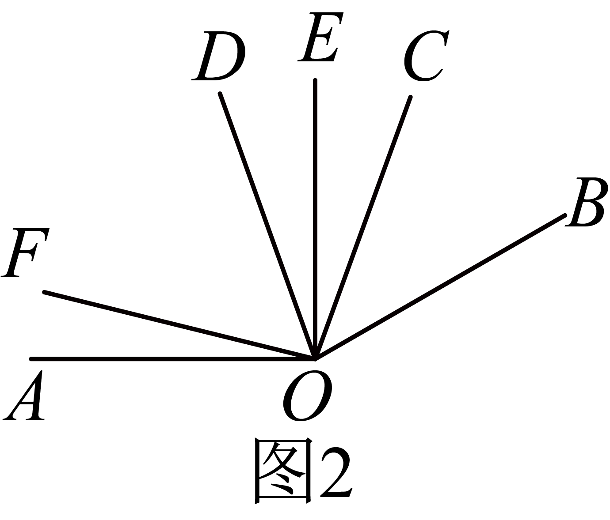
∵∠AOB>110°，∴∠AOD>110°−∠BOD，即∠AOD>30°．
∴OF在∠AOB内．
∴∠EOF=∠DOF+∠DOE=30°+∠20°=50°．
当OF在D的右侧时，
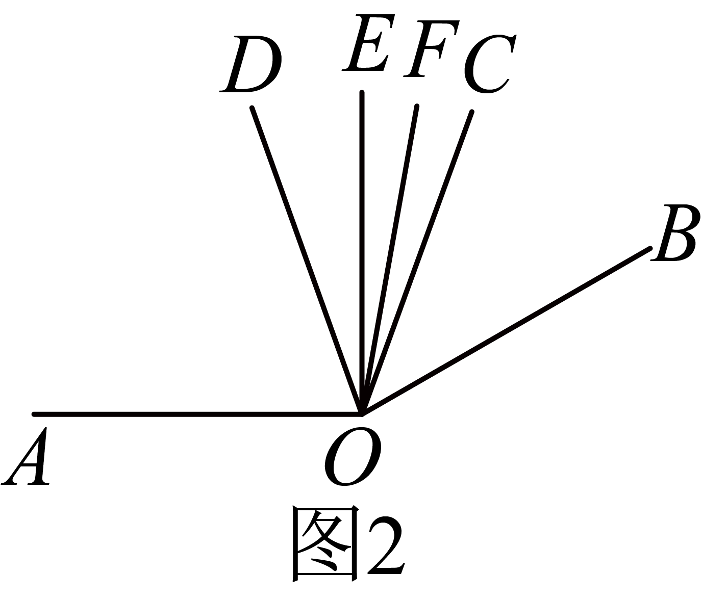
∠EOF=∠DOF−∠DOE=30°−20°=10°（3）α+β=2γ，理由如下
∵OE平分∠AOC，OF平分∠BOD，
∴∠COE=12∠AOC，∠DOF=12∠BOD．
∴∠EOF=∠COE+∠COD+∠DOF=12∠AOC+∠BOD+∠COD=γ．
∵∠AOB=∠AOC+∠COD+∠BOD=α，
∴∠AOC+∠BOD=α−β．
∴12α−β+β=γ，即α+β=2γ